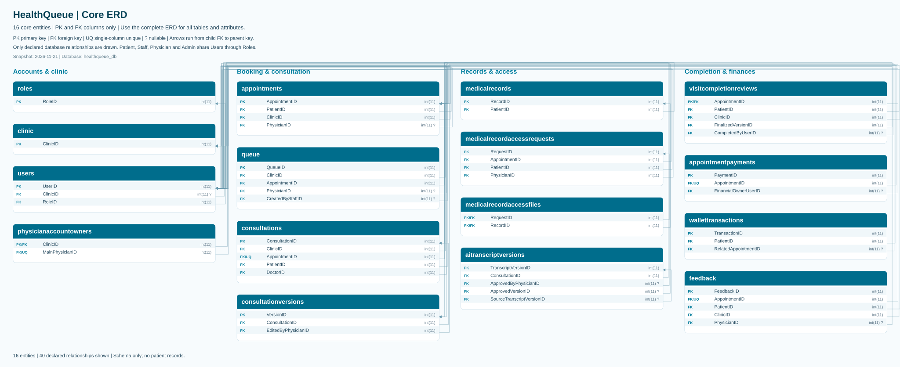
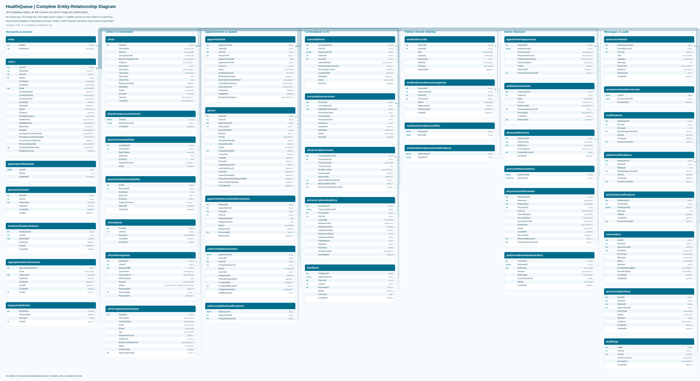

Schema snapshot: 2026-11-21. Core overview only. See page 2 for all 42 tables, 365 columns and 91 declared foreign-key relationships.

All current tables and attributes. Zoom to read individual fields. Arrows run from child foreign keys to referenced parent keys. No patient records are included.
